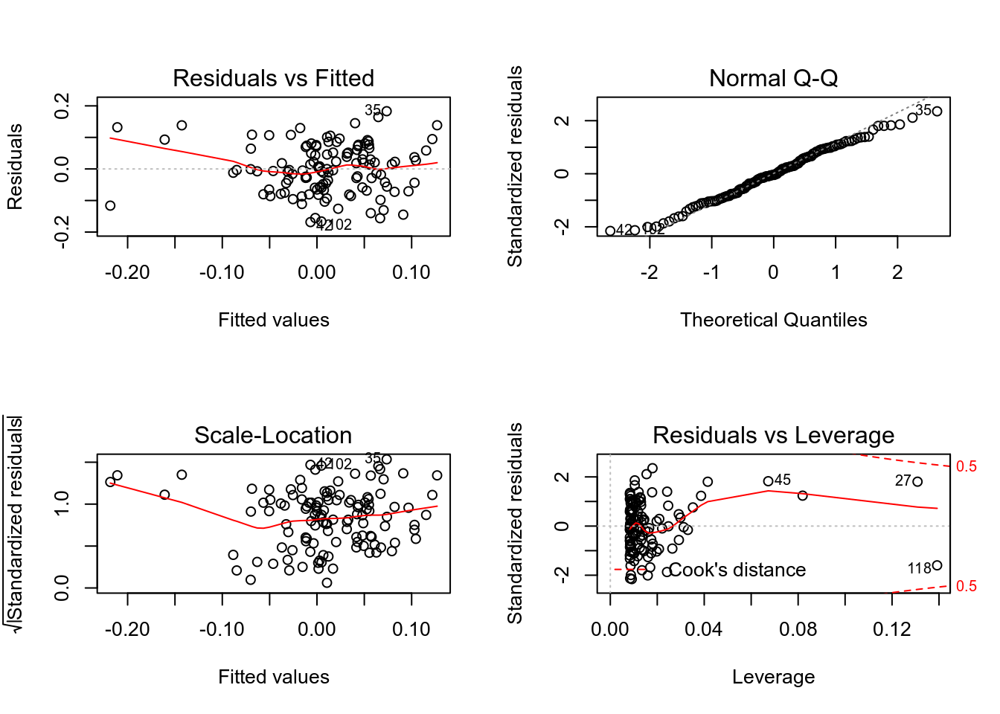

Коан 3 Коан о простой линейной регрессии
3.1 Python
Опять начинаем с импорта пакетов. Почти всегда джентельменский набор включает в себя pandas, numpy и matplotlib.pyplot. Много полезных функций для статистических расчетов можно найти в модуле Statsmodels.
import pandas as pd # работа с таблицами
import numpy as np # математические функции и матрицы
import matplotlib.pyplot as plt # графики
import seaborn as sns # еще более классные графики
import statsmodels.api as sm # стандартные регресионные модели
import statsmodels.formula.api as smf # аналогичные модели с синтаксисом в стиле R
import statsmodels.graphics.gofplots as gf # визуализация моделей
import statsmodels.discrete.discrete_model # дискретные модели
from statsmodels.stats.outliers_influence import summary_table # работа с выбросами
from scipy.stats import shapiro # тест Шапиро – Уилка При желании можем настроить графики по своему вкусу, изменив стиль и другие параметры шрифтов и графиков :)
plt.style.use('seaborn')
plt.rc('font', size=14)
plt.rc('figure', titlesize=15)
plt.rc('axes', labelsize=15)
plt.rc('axes', titlesize=15)Загрузим данные.
returns = pd.read_stata('../data/02_us_return.dta')Переименуем столбцы с «неговорящими» названиями :)
Параметр inplace=True здесь (и во многих других функциях) позволяет изменить объект, не возвращая его копию.
returns.rename(columns={'A':'n', 'B': 'date'}, inplace=True)Избавимся от наблюдений с пропущенными значениями.
returns.dropna(inplace=True)Как и прежде, рассмотрим CAPM модель :)
Оценим бэту для компании MOTOR.
Тогда зависимая переменная - разница доходностей акций MOTOR и безрискового актива (motor_premium), а регрессор - рыночная премия (market_premium).
returns['motor_premium'] = returns['MOTOR'] - returns['RKFREE']
returns['market_premium'] = returns['MARKET'] - returns['RKFREE'] Оценим модель и посмотрим на саммари :)
regr = smf.ols('motor_premium ~ market_premium', data=returns).fit()
regr.summary()<class 'statsmodels.iolib.summary.Summary'>
"""
OLS Regression Results
==============================================================================
Dep. Variable: motor_premium R-squared: 0.357
Model: OLS Adj. R-squared: 0.351
Method: Least Squares F-statistic: 65.48
Date: Sat, 18 Jan 2020 Prob (F-statistic): 5.91e-13
Time: 13:07:40 Log-Likelihood: 136.18
No. Observations: 120 AIC: -268.4
Df Residuals: 118 BIC: -262.8
Df Model: 1
Covariance Type: nonrobust
==================================================================================
coef std err t P>|t| [0.025 0.975]
----------------------------------------------------------------------------------
Intercept 0.0053 0.007 0.730 0.467 -0.009 0.020
market_premium 0.8481 0.105 8.092 0.000 0.641 1.056
==============================================================================
Omnibus: 2.684 Durbin-Watson: 2.030
Prob(Omnibus): 0.261 Jarque-Bera (JB): 1.780
Skew: -0.031 Prob(JB): 0.411
Kurtosis: 2.406 Cond. No. 14.6
==============================================================================
Warnings:
[1] Standard Errors assume that the covariance matrix of the errors is correctly specified.
"""Можем посчитать прогнозное значение.
returns['yhat'] = regr.fittedvalues # в R добавить для исходных, а сюда для новыхКрасивые графики для остатков, выборосов и прочих радостей, как в R, придется строить ручками. Зато приятно поиграть с оформлением :)
fig, ax = plt.subplots()
ax.plot(returns['x'],regr.fittedvalues, color='g', alpha=0.8)Error in py_call_impl(callable, dots$args, dots$keywords): KeyError: 'x'
Detailed traceback:
File "<string>", line 1, in <module>
File "C:\Users\DNS\ANACON~1\lib\site-packages\pandas\core\frame.py", line 2975, in __getitem__
indexer = self.columns.get_loc(key)
File "C:\Users\DNS\ANACON~1\lib\site-packages\pandas\core\indexes\base.py", line 2892, in get_loc
return self._engine.get_loc(self._maybe_cast_indexer(key))
File "pandas/_libs/index.pyx", line 107, in pandas._libs.index.IndexEngine.get_loc
File "pandas/_libs/index.pyx", line 131, in pandas._libs.index.IndexEngine.get_loc
File "pandas/_libs/hashtable_class_helper.pxi", line 1607, in pandas._libs.hashtable.PyObjectHashTable.get_item
File "pandas/_libs/hashtable_class_helper.pxi", line 1614, in pandas._libs.hashtable.PyObjectHashTable.get_itemax.scatter(returns['x'],regr.fittedvalues + regr.resid, color='g', alpha=0.8, s=40)Error in py_call_impl(callable, dots$args, dots$keywords): KeyError: 'x'
Detailed traceback:
File "<string>", line 1, in <module>
File "C:\Users\DNS\ANACON~1\lib\site-packages\pandas\core\frame.py", line 2975, in __getitem__
indexer = self.columns.get_loc(key)
File "C:\Users\DNS\ANACON~1\lib\site-packages\pandas\core\indexes\base.py", line 2892, in get_loc
return self._engine.get_loc(self._maybe_cast_indexer(key))
File "pandas/_libs/index.pyx", line 107, in pandas._libs.index.IndexEngine.get_loc
File "pandas/_libs/index.pyx", line 131, in pandas._libs.index.IndexEngine.get_loc
File "pandas/_libs/hashtable_class_helper.pxi", line 1607, in pandas._libs.hashtable.PyObjectHashTable.get_item
File "pandas/_libs/hashtable_class_helper.pxi", line 1614, in pandas._libs.hashtable.PyObjectHashTable.get_itemax.vlines(returns['x'],regr.fittedvalues,regr.fittedvalues + regr.resid, color='gray', alpha=0.5)Error in py_call_impl(callable, dots$args, dots$keywords): KeyError: 'x'
Detailed traceback:
File "<string>", line 1, in <module>
File "C:\Users\DNS\ANACON~1\lib\site-packages\pandas\core\frame.py", line 2975, in __getitem__
indexer = self.columns.get_loc(key)
File "C:\Users\DNS\ANACON~1\lib\site-packages\pandas\core\indexes\base.py", line 2892, in get_loc
return self._engine.get_loc(self._maybe_cast_indexer(key))
File "pandas/_libs/index.pyx", line 107, in pandas._libs.index.IndexEngine.get_loc
File "pandas/_libs/index.pyx", line 131, in pandas._libs.index.IndexEngine.get_loc
File "pandas/_libs/hashtable_class_helper.pxi", line 1607, in pandas._libs.hashtable.PyObjectHashTable.get_item
File "pandas/_libs/hashtable_class_helper.pxi", line 1614, in pandas._libs.hashtable.PyObjectHashTable.get_itemplt.title('Линия регрессии и остатки')
plt.xlabel('RKFREE')
plt.ylabel('MARKET')
plt.show()
Строим \(90\%\)-й доверительный интервал.
regr.conf_int(alpha = 0.1) 0 1
Intercept -0.006684 0.017189
market_premium 0.674382 1.021917И проведем F-test.
hypotheses = '(x = 1)'
regr.f_test(r_matrix = hypotheses)Error in py_call_impl(callable, dots$args, dots$keywords): PatsyError: unrecognized token in constraint
(x = 1)
^
Detailed traceback:
File "<string>", line 1, in <module>
File "C:\Users\DNS\ANACON~1\lib\site-packages\statsmodels\base\model.py", line 1648, in f_test
res = self.wald_test(r_matrix, cov_p=cov_p, invcov=invcov, use_f=True)
File "C:\Users\DNS\ANACON~1\lib\site-packages\statsmodels\base\model.py", line 1719, in wald_test
LC = DesignInfo(names).linear_constraint(r_matrix)
File "C:\Users\DNS\ANACON~1\lib\site-packages\patsy\design_info.py", line 536, in linear_constraint
return linear_constraint(constraint_likes, self.column_names)
File "C:\Users\DNS\ANACON~1\lib\site-packages\patsy\constraint.py", line 403, in linear_constraint
tree = parse_constraint(code, variable_names)
File "C:\Users\DNS\ANACON~1\lib\site-packages\patsy\constraint.py", line 237, in parse_constraint
return infix_parse(_tokenize_constraint(string, variable_names),
File "C:\Users\DNS\ANACON~1\lib\site-packages\patsy\constraint.py", line 196, in _tokenize_constraint
Origin(string, offset, offset + 1))Тест Шапиро - Уилка. Такой же, как и в R.
W, p_value = shapiro(regr.resid)Генерируем новые данные и строим предсказание.
import random
random.seed(7)
new_data = returns['x'] + 0.5 * np.random.normal(len(returns))Error in py_call_impl(callable, dots$args, dots$keywords): KeyError: 'x'
Detailed traceback:
File "<string>", line 1, in <module>
File "C:\Users\DNS\ANACON~1\lib\site-packages\pandas\core\frame.py", line 2975, in __getitem__
indexer = self.columns.get_loc(key)
File "C:\Users\DNS\ANACON~1\lib\site-packages\pandas\core\indexes\base.py", line 2892, in get_loc
return self._engine.get_loc(self._maybe_cast_indexer(key))
File "pandas/_libs/index.pyx", line 107, in pandas._libs.index.IndexEngine.get_loc
File "pandas/_libs/index.pyx", line 131, in pandas._libs.index.IndexEngine.get_loc
File "pandas/_libs/hashtable_class_helper.pxi", line 1607, in pandas._libs.hashtable.PyObjectHashTable.get_item
File "pandas/_libs/hashtable_class_helper.pxi", line 1614, in pandas._libs.hashtable.PyObjectHashTable.get_itemprediction = regr.predict(new_data)Error in py_call_impl(callable, dots$args, dots$keywords): NameError: name 'new_data' is not defined
Detailed traceback:
File "<string>", line 1, in <module>А теперь жесть! Построим графички, похожие на plot() R.
fig_1 = plt.figure(1)
fig_1.axes[0] = sns.residplot(returns['x'], returns['y'],
lowess=True,
scatter_kws={'alpha': 0.6},
line_kws={'color': 'red', 'lw': 2, 'alpha': 0.8})Error in py_call_impl(callable, dots$args, dots$keywords): KeyError: 'x'
Detailed traceback:
File "<string>", line 1, in <module>
File "C:\Users\DNS\ANACON~1\lib\site-packages\pandas\core\frame.py", line 2975, in __getitem__
indexer = self.columns.get_loc(key)
File "C:\Users\DNS\ANACON~1\lib\site-packages\pandas\core\indexes\base.py", line 2892, in get_loc
return self._engine.get_loc(self._maybe_cast_indexer(key))
File "pandas/_libs/index.pyx", line 107, in pandas._libs.index.IndexEngine.get_loc
File "pandas/_libs/index.pyx", line 131, in pandas._libs.index.IndexEngine.get_loc
File "pandas/_libs/hashtable_class_helper.pxi", line 1607, in pandas._libs.hashtable.PyObjectHashTable.get_item
File "pandas/_libs/hashtable_class_helper.pxi", line 1614, in pandas._libs.hashtable.PyObjectHashTable.get_itemfig_1.axes[0].set_title('Residuals vs Fitted')Error in py_call_impl(callable, dots$args, dots$keywords): IndexError: list index out of range
Detailed traceback:
File "<string>", line 1, in <module>fig_1.axes[0].set_xlabel('Fitted values')Error in py_call_impl(callable, dots$args, dots$keywords): IndexError: list index out of range
Detailed traceback:
File "<string>", line 1, in <module>fig_1.axes[0].set_ylabel('Residuals')
# можем добавить метки потенциальных аутлаеровError in py_call_impl(callable, dots$args, dots$keywords): IndexError: list index out of range
Detailed traceback:
File "<string>", line 1, in <module>abs_resid = abs(regr.resid).sort_values(ascending=False)
abs_resid_top3=abs_resid[:3]
for i in abs_resid_top3.index:
fig_1.axes[0].annotate(i,
xy = (regr.fittedvalues[i],
regr.resid[i]))Error in py_call_impl(callable, dots$args, dots$keywords): IndexError: list index out of range
Detailed traceback:
File "<string>", line 2, in <module>norm_residuals = regr.get_influence().resid_studentized_internal # сохраним стьюдентизированные остатки
QQ = gf.ProbPlot(norm_residuals)
fig_2 = QQ.qqplot(line='45', alpha=0.5, color='b', lw=1)
fig_2.axes[0].set_title('Normal Q-Q')
fig_2.axes[0].set_xlabel('Theoretical Quantiles')
fig_2.axes[0].set_ylabel('Standardized Residuals');
#и снова метки
abs_norm_resid = np.flip(np.argsort(abs(norm_residuals)), 0)
abs_norm_resid_top3 = abs_norm_resid[:3]
for r, i in enumerate(abs_norm_resid_top3):
fig_2.axes[0].annotate(i,
xy=(np.flip(QQ.theoretical_quantiles, 0)[r],
norm_residuals[i]))
fig_3 = plt.figure(3)
plt.scatter(regr.fittedvalues, np.sqrt(abs(norm_residuals)), alpha=0.5)
sns.regplot(regr.fittedvalues, np.sqrt(abs(norm_residuals)),
scatter=False,
ci=False,
lowess=True,
line_kws={'color': 'red', 'lw': 1, 'alpha': 0.6})
fig_3.axes[0].set_title('Scale-Location')
fig_3.axes[0].set_xlabel('Fitted values')
fig_3.axes[0].set_ylabel('$\sqrt{|Standardized Residuals|}$')
# и еще раз!)
abs_sq_norm_resid = np.flip(np.argsort(np.sqrt(abs(norm_residuals)), 0))
abs_sq_norm_resid_top3 = abs_sq_norm_resid[:3]
for i in abs_sq_norm_resid_top3:
fig_3.axes[0].annotate(i, xy=(regr.fittedvalues[i],
np.sqrt(abs(norm_residuals)[i])))
leverage = regr.get_influence().hat_matrix_diag # сохраняем элементы матрицы-шляпницы
cook_dist = regr.get_influence().cooks_distance[0] # и расстояние Кука
fig_4 = plt.figure(4)
plt.scatter(leverage, norm_residuals, alpha=0.5)
sns.regplot(leverage, norm_residuals,
scatter=False,
ci=False,
lowess=True,
line_kws={'color': 'red', 'lw': 1, 'alpha': 0.8})
fig_4.axes[0].set_xlim(0, 0.20) # РАЗВЕСТИ НА ОТДЕЛЬНЫЕ ЧАНКИ ИЛИ MESSAGE = FALSE(0, 0.2)fig_4.axes[0].set_ylim(-3, 5)(-3, 5)fig_4.axes[0].set_title('Residuals vs Leverage')
fig_4.axes[0].set_xlabel('Leverage')
fig_4.axes[0].set_ylabel('Standardized Residuals')
leverage_top3 = np.flip(np.argsort(cook_dist), 0)[:3]
for i in leverage_top3:
fig_4.axes[0].annotate(i,
xy=(leverage[i],
norm_residuals[i]))
plt.show()
Коан 2 Коан о простой линейной регрессии
2.1 R
Построим простую линейную регрессию в R и проведем несложные тесты.
Загрузим необходимые пакеты.
library(tidyverse) # манипуляции с данными и построение графиков
library(sjPlot) # красивые графики для линейных моделей
library(skimr) # симпатичное summary
library(rio) # чтение .dta файлов
library(car) # проверка линейных гипотез
library(tseries) # тест Харке – БераИмпортируем данные.
Исследуем наш датасет.
Функция skim() позволяет получить красивую и приятную в работе табличку (tibble), содержащую типы переменных и различные описательные статистики.
Для удобства выведем результаты только для переменных MOTOR и rkfree.
| Name | returns |
| Number of rows | 2664 |
| Number of columns | 22 |
| _______________________ | |
| Column type frequency: | |
| numeric | 2 |
| ________________________ | |
| Group variables | None |
Variable type: numeric
| skim_variable | n_missing | complete_rate | mean | sd | p0 | p25 | p50 | p75 | p100 | hist |
|---|---|---|---|---|---|---|---|---|---|---|
| MOTOR | 2544 | 0.05 | 0.02 | 0.1 | -0.33 | -0.05 | 0.02 | 0.08 | 0.27 | ▁▂▇▇▁ |
| rkfree | 2544 | 0.05 | 0.01 | 0.0 | 0.00 | 0.01 | 0.01 | 0.01 | 0.01 | ▂▇▇▂▂ |
Переименуем столбцы с «неговорящими» названиями :)
И уберем строчки, в которых хотя бы один элемент пустой.
Будем верить в CAPM :) (в начале объяснить, что такое capm)
Оценим параметры модели для компании MOTOR. Тогда зависимая переменная - разница доходностей акций MOTOR и безрискового актива (motor_premium), а регрессор - рыночная премия (market_premium).
Оценим нашу модель и проверим гипотезу об адекватности регрессии.
Call:
lm(formula = motor_premium ~ market_premium, data = returns)
Residuals:
Min 1Q Median 3Q Max
-0.168421 -0.059381 -0.003399 0.061373 0.182991
Coefficients:
Estimate Std. Error t value Pr(>|t|)
(Intercept) 0.005253 0.007200 0.730 0.467
market_premium 0.848150 0.104814 8.092 5.91e-13 ***
---
Signif. codes: 0 '***' 0.001 '**' 0.01 '*' 0.05 '.' 0.1 ' ' 1
Residual standard error: 0.07844 on 118 degrees of freedom
Multiple R-squared: 0.3569, Adjusted R-squared: 0.3514
F-statistic: 65.48 on 1 and 118 DF, p-value: 5.913e-13Вызовом одной функции получаем кучу полезных графиков :)
Можем визуально оценить наличие гетероскедастичности, нормальность распределения остатков, наличие выбросов.
Без дополнительных указаний функция построит 4 графика – по одному друг за другом.
Мы для красоты c помощью функции par будем выводить по два графика :)

График «Residuals vs Fitted» помогает уловить возможные нелинейные зависимости между регрессором и объясняемой переменной. В «хорошем» случае мы ждем картинку с остатками, равномерно рассеянными вдоль горизонтальной прямой. В нашем случае несколько выбиваются наблюдения с отрицательной рыночной премией.
График «Normal Q – Q» позволяет визуально оценить нормальность распределения остатков. Эталоном здесь является пунктирная прямая. На графике функция распределения остатков нашей модели «похожа» на нормальную :)
График «Scale – Location» дает возможность «на глаз» оценить равную дисперсию остатков регресии и проверить наличие гетероскедастичности. За исключением немногочисленных наблюдений с отрицательной рыночной премией, в нашем случае предположение о гомоскедастичности (одинаковой дисперсии) остатков кажется верным.
График «Residuals vs Leverage» помогает выявить «влиятельные наблюдения» с высоким «воздействием» (high leverage). Это такие наблюдения, которые имеют нетипичные для выборки значения, но исключение которых может значительно повлиять на оценки коэффициентов модели. На графике они располагаются справа, за границами, обозначенными красной пунктирной линией (расстояние Кука).
Теперь построим \(90\%\)-й доверительный интервал для параметров модели.
5 % 95 %
(Intercept) -0.006683687 0.01718942
market_premium 0.674382048 1.02191711И заодно проверим гипотезу о равенстве коэффициента при регрессоре единице.
Linear hypothesis test
Hypothesis:
market_premium = 1
Model 1: restricted model
Model 2: motor_premium ~ market_premium
Res.Df RSS Df Sum of Sq F Pr(>F)
1 119 0.73900
2 118 0.72608 1 0.012915 2.0989 0.1501Видим, что на любом разумном уровне значимости она не отвергается.
Теперь посмотрим на остатки регрессии :) Протестируем их на нормальность с помощью теста Харке – Бера.
\[ H_{0}: S = 0, K = 3, \] где S — коэффициент асимметрии (Skewness), K — коэффициент эксцесса (Kurtosis)
Jarque Bera Test
data: resid(ols)
X-squared = 1.7803, df = 2, p-value = 0.4106И заодно посмотрим на результаты теста Шапиро – Уилка.
\[ H_{0}: \epsilon_{i} \sim N(\mu,\sigma^2) \]
Shapiro-Wilk normality test
data: resid(ols)
W = 0.99021, p-value = 0.5531Оба теста указывают на нормальность распределения остатков.
Получим предсказания модели для обучаемой выборки.
2.1.0.1 ДОДУМАТЬ
qplot(x = 1:length(fitval), y = returns$market_premium,
xlab = "Number of observation",
ylab = "Value") + geom_point(aes(y = fitval, color = 'r'))
Выведем прогноз модели по \(20\) новым наблюдениям (которые сами же и придумаем). Будем считать, что новые наблюдения распределены нормально с математическим ожиданием \(0.01\) и дисперсией \(0.01\).
set.seed(7)
new_data = tibble(market_premium = rnorm(10, mean = 0.01, sd = 0.1))
yhat = predict(ols, newdata = new_data, se = TRUE)
yhat$fit 1 2 3 4 5
0.207727133 -0.087769779 -0.045152029 -0.021234248 -0.068593258
6 7 8 9 10
-0.066609148 0.077187768 0.003814809 0.026682011 0.199477263